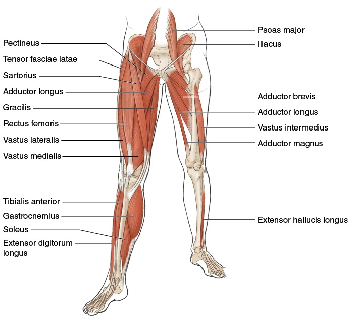

Joints as Springs — The Elastic-Band Model of Tennis Anatomy¶
Khớp Như Lò Xo — Mô Hình Dây Thun Của Giải Phẫu Tennis¶
Deep Dive #2 — The Anatomy & Geometry Project for Tennis Players 3.5 → 4.5 Chuyên Đề Số 2 — Dự Án Giải Phẫu & Hình Học cho Người Chơi Tennis 3.5 → 4.5
Document Map / Bản Đồ Tài Liệu¶
| 🇺🇸 English | 🇻🇳 Tiếng Việt |
|---|---|
| The big idea — Every joint in your body is an elastic spring. Tendons are the springs. Muscles are the engines that LOAD and RELEASE the springs. The tennis swing is a sequence of springs firing in order. | Ý tưởng cốt lõi — Mọi khớp trong cơ thể bạn là lò xo đàn hồi. Gân là lò xo. Cơ là động cơ NẠP và GIẢI PHÓNG lò xo. Cú vung tennis là chuỗi lò xo bắn theo thứ tự. |
| Why this matters for 3.5 → 4.5 — Most recreational players think "muscle = power." Wrong. Muscle = energy storage and release. Tendon = force amplifier. Players who understand this use less muscle and generate more racket-head speed, with less fatigue and fewer injuries. | Tại sao điều này quan trọng cho 3.5 → 4.5 — Hầu hết người chơi phong trào nghĩ "cơ = sức mạnh." Sai. Cơ = tích trữ và giải phóng năng lượng. Gân = bộ khuếch đại lực. Người chơi hiểu điều này dùng ít cơ hơn và tạo nhiều tốc độ đầu vợt hơn, ít mệt hơn và ít chấn thương hơn. |
| What's new here — No other chapter in your library covers tendons as separate entities from muscles. This is the layer that biomechanics research calls the "elastic strain energy" component of tennis power. | Cái mới ở đây — Không chương nào khác trong thư viện của bạn đề cập gân như thực thể tách biệt khỏi cơ. Đây là lớp mà nghiên cứu cơ sinh học gọi là thành phần "năng lượng biến dạng đàn hồi" của sức mạnh tennis. |
Table of Contents / Mục Lục¶
| # | Chapter | Chương |
|---|---|---|
| 1 | Muscles Are Springs — The Elastic-Band Metaphor | Cơ Là Lò Xo — Ẩn Dụ Dây Thun |
| 2 | Tendons: The Real Springs | Gân: Lò Xo Thật Sự |
| 3 | The Stretch-Shortening Cycle (SSC) | Chu Kỳ Giãn-Co Ngắn (SSC) |
| 4 | The Spring Sequence in the Forehand | Chuỗi Lò Xo Trong Forehand |
| 5 | The Spring Sequence in the Serve | Chuỗi Lò Xo Trong Serve |
| 6 | The Spring Sequence in Volley & Return | Chuỗi Lò Xo Trong Volley & Trả Giao |
| 7 | Why Older Players Need Longer Pre-Load | Tại Sao Người Lớn Tuổi Cần Nạp Lâu Hơn |
| 8 | Spring Drills (5 min × 50+ friendly) | Bài Tập Lò Xo (5 phút × thân thiện 50+) |
| 📋 | Spring Cheat Sheet | Bảng Tóm Tắt Lò Xo |
Chapter 1 — Muscles Are Springs — The Elastic-Band Metaphor¶
Chương 1 — Cơ Là Lò Xo — Ẩn Dụ Dây Thun¶
| 🇺🇸 English | 🇻🇳 Tiếng Việt |
|---|---|
| Imagine your arm is connected to the racket by a rubber band — but only a rubber band. No muscle, no bone, no joint. Just a thick elastic cord tied to your wrist and tied to the handle. | Tưởng tượng tay bạn nối vợt bằng dây thun — nhưng chỉ dây thun. Không cơ, không xương, không khớp. Chỉ dây đàn hồi dày cột vào cổ tay và cột vào cán vợt. |
| Now — to pull the racket back, the rubber band must stretch. To swing forward, the rubber band must release. Between the stretch and the release, the rubber band is at "rest" — neither pulling forward nor backward. That rest moment is exactly what your body does at the top of every backswing. | Giờ — để kéo vợt ra sau, dây thun phải giãn. Để vung tới, dây thun phải giải phóng. Giữa giãn và giải phóng, dây thun ở "nghỉ" — không kéo tới không kéo lùi. Khoảnh khắc nghỉ đó là chính xác những gì cơ thể bạn làm ở đỉnh mỗi cú vung sau. |
| A muscle is essentially that. A bundle of stretchy fibers (the rubber bands) wrapped together, with blood vessels to feed them and nerves to control them. The fibers stretch and contract; that's all a muscle does. | Cơ về cơ bản là vậy. Một bó sợi co giãn (các dây thun) cuộn vào nhau, có mạch máu nuôi và dây thần kinh điều khiển. Sợi giãn và co; đó là tất cả những gì cơ làm. |
| The crucial implication — When you "hit" a tennis ball, you are NOT simply contracting a muscle. You are: (1) loading energy by stretching (the rubber band stretches), (2) holding (the rubber band rests), (3) releasing (the rubber band snaps). | Hệ quả quan trọng — Khi bạn "đánh" bóng tennis, bạn KHÔNG chỉ đơn giản là co cơ. Bạn đang: (1) nạp năng lượng bằng cách giãn (dây thun giãn), (2) giữ (dây thun nghỉ), (3) giải phóng (dây thun bắn). |
| The source document nails this — Trước khi muốn [đánh] nó lao đi nhanh chóng, động cơ cần nạp nguyên liệu. Translation: before you swing, you must LOAD. Before the engine fires, fuel goes in. | Tài liệu nguồn đóng đinh điều này — Trước khi muốn [đánh] nó lao đi nhanh chóng, động cơ cần nạp nguyên liệu. Dịch: trước khi vung, bạn phải NẠP. Trước khi động cơ nổ, nhiên liệu vào. |
| The "relax to play better" myth debunked — Many coaches tell you to "relax" before hitting. This is WRONG if your muscles are not yet loaded. You must FIRST load (stretch), THEN relax (hold), THEN release. "Relax without loading" = swing with empty muscles = no power. | Huyền thoại "thả lỏng để đánh hay" bị bác bỏ — Nhiều HLV nói bạn "thả lỏng" trước khi đánh. Điều này SAI nếu cơ bạn chưa nạp. Bạn phải ĐẦU TIÊN nạp (giãn), SAU ĐÓ thả lỏng (giữ), RỒI giải phóng. "Thả lỏng mà không nạp" = vung cơ rỗng = không lực. |
| Master cue: "Load. Hold. Release. Repeat." | Câu nhắc tổng: "Nạp. Giữ. Phóng. Lặp." |
Chapter 2 — Tendons: The Real Springs¶
Chương 2 — Gân: Lò Xo Thật Sự¶
| 🇺🇸 English | 🇻🇳 Tiếng Việt |
|---|---|
| Here is where 90% of players miss the point. Muscles contract; that's what they do. But tendons STRETCH and RECOIL — and that recoil is the secret weapon. | Đây là nơi 90% người chơi hiểu sai. Cơ co; đó là việc của cơ. Nhưng gân GIÃN và BẬT LẠI — và cú bật lại là vũ khí bí mật. |
| The anatomy — A tendon connects muscle to bone. It's made of collagen fibers — extremely stiff in tension, moderately elastic in stretch. When a muscle contracts, the tendon transmits the force to the bone. When a muscle stretches, the tendon ALSO stretches (less, but significantly). | Giải phẫu — Gân nối cơ với xương. Nó làm từ sợi collagen — cực kỳ cứng khi kéo, đàn hồi vừa khi giãn. Khi cơ co, gân truyền lực tới xương. Khi cơ giãn, gân CŨNG giãn (ít hơn, nhưng đáng kể). |
| The spring equation — Energy stored in a stretched tendon = ½ × k × x², where k is the tendon's stiffness and x is how far it stretches. The important part is the x² — double the stretch, four times the energy. | Phương trình lò xo — Năng lượng tích trong gân giãn = ½ × k × x², với k là độ cứng gân và x là độ giãn. Phần quan trọng là x² — gấp đôi giãn, bốn lần năng lượng. |
| Real numbers — The Achilles tendon stores ~35 joules of energy during a sprint push-off. The patellar tendon stores ~20 joules during a vertical jump. The supraspinatus tendon stores ~5 joules during a tennis serve. Add them up across the whole body = the difference between a recreational player's 60 mph serve and a pro's 130 mph serve. | Con số thật — Gân Achilles tích ~35 joule năng lượng khi bật chạy nước rút. Gân xương bánh chè tích ~20 joule khi nhảy đứng. Gân trên gai tích ~5 joule khi serve tennis. Cộng lại khắp cơ thể = khác biệt giữa serve 60 dặm/giờ của người phong trào và serve 130 dặm/giờ của pro. |
| The 3 springs of tennis | 3 lò xo của tennis |
| Spring 1 — Achilles tendon (heel-cord): connects calf muscles (gastrocnemius + soleus) to the heel bone (calcaneus). Maximum stretch at ~50°–60° heel lift. Stores ~35 J. | Lò xo 1 — Gân Achilles (gân gót): nối cơ bắp chân (gastrocnemius + soleus) với xương gót (calcaneus). Giãn tối đa ở ~50°–60° nâng gót. Tích ~35 J. |
| Spring 2 — Patellar tendon (knee-cap-cord): connects quadriceps to the shin bone (tibia). Maximum stretch at ~120° knee flexion. Stores ~20 J. | Lò xo 2 — Gân xương bánh chè (dây xương bánh chè): nối tứ đầu đùi với xương ống (tibia). Giãn tối đa ở ~120° gập gối. Tích ~20 J. |
| Spring 3 — Supraspinatus tendon (shoulder-cord): connects supraspinatus muscle to the top of the humerus. Maximum stretch at ~110°–130° shoulder external rotation. Stores ~5 J. | Lò xo 3 — Gân trên gai (dây vai): nối cơ trên gai với đỉnh xương cánh tay. Giãn tối đa ở ~110°–130° xoay ngoài vai. Tích ~5 J. |
| The hidden springs — Every major muscle-tendon unit acts as a spring: hamstring tendons, glute tendons, latissimus tendon, pec major tendons, wrist flexor tendons. You have ~30 named spring systems in your body that contribute to a tennis stroke. | Lò xo ẩn — Mỗi đơn vị cơ-gân lớn hoạt động như lò xo: gân gân kheo, gân mông, gân lưng rộng, gân ngực lớn, gân gập cổ tay. Bạn có ~30 hệ lò xo được đặt tên trong cơ thể đóng góp vào cú tennis. |
| Why this matters at 50+ — Tendon stiffness INCREASES with age (collagen cross-links). This means tendons stretch LESS for the same force. The Achilles of a 55-year-old stores only ~25 J vs the 25-year-old's ~35 J. That's a 30% power loss just from aging tendons. | Tại sao điều này quan trọng ở 50+ — Độ cứng gân TĂNG theo tuổi (cross-links collagen). Nghĩa là gân giãn ÍT hơn cho cùng lực. Achilles của người 55 tuổi chỉ tích ~25 J so với ~35 J của người 25 tuổi. Đó là mất 30% sức mạnh chỉ từ gân lão hóa. |
| The good news — Tendons respond to SLOW progressive loading. Eccentric heel-drop exercises (calf lowering off a step) increase Achilles storage by 15%–25% over 12 weeks, even at age 60+. You CAN rebuild spring capacity. | Tin tốt — Gân đáp ứng với tải tiến triển CHẬM. Bài tập eccentric hạ gót (hạ bắp chân khỏi bậc thang) tăng tích Achilles 15%–25% qua 12 tuần, ngay cả ở 60+ tuổi. Bạn CÓ THỂ tái tạo dung lượng lò xo. |
| Master cue: "Tendons are springs. Treat them like you treat a guitar string — tune them, stretch them, don't snap them." | Câu nhắc tổng: "Gân là lò xo. Hãy đối xử như đàn guitar — lên dây, giãn, đừng đứt." |
Chapter 3 — The Stretch-Shortening Cycle (SSC)¶
Chương 3 — Chu Kỳ Giãn-Co Ngắn (SSC)¶
| 🇺🇸 English | 🇻🇳 Tiếng Việt |
|---|---|
| Every tennis shot has a 3-phase cycle that lasts about 0.5–1.0 seconds from start to contact: | Mọi cú tennis có chu kỳ 3 pha kéo dài khoảng 0.5–1.0 giây từ đầu tới tiếp xúc: |
| Phase 1 — Eccentric Loading (the stretch) — Muscle lengthens under tension. Tendon stretches. Energy is stored. Think of it as drawing back a bowstring. Duration: ~0.3–0.5s. | Pha 1 — Nạp Eccentric (giãn) — Cơ dài ra dưới lực căng. Gân giãn. Năng lượng được tích. Nghĩ như kéo dây cung về sau. Thời gian: ~0.3–0.5s. |
| Phase 2 — Amortization (the hold) — Brief pause between stretch and release. The body switches from eccentric to concentric muscle action. Duration: ~0.05–0.15s. | Pha 2 — Amortization (giữ) — Tạm dừng ngắn giữa giãn và phóng. Cơ thể chuyển từ hành động cơ eccentric sang concentric. Thời gian: ~0.05–0.15s. |
| Phase 3 — Concentric Release (the snap) — Muscle shortens. Tendon recoils. Racket accelerates. Ball gets crushed. Duration: ~0.05–0.10s. | Pha 3 — Giải Phóng Concentric (bắn) — Cơ ngắn lại. Gân bật lại. Vợt tăng tốc. Bóng bị nghiền. Thời gian: ~0.05–0.10s. |
| The amortization window is critical — If it's TOO LONG (>0.2s), the stored energy dissipates as heat and you lose 30%–50% of power. This is why slow, deliberate practice swings feel weak. | Cửa sổ amortization then chốt — Nếu QUÁ LÂU (>0.2s), năng lượng tích tiêu tán thành nhiệt và bạn mất 30%–50% lực. Đây là lý do vung chậm, có chủ đích cảm thấy yếu. |
| If it's TOO SHORT (<0.02s), the muscle hasn't had time to switch modes, and you use only the stretch reflex (not the tendon recoil). You lose ~20% of power. | Nếu QUÁ NGẮN (<0.02s), cơ chưa kịp chuyển chế độ, và bạn chỉ dùng phản xạ giãn (không phải gân bật). Bạn mất ~20% lực. |
| The sweet spot — 0.05–0.15 seconds. This is what pros do naturally. Recreational players either pause too long (because they "think about it") or rush too fast (because they panic). | Điểm ngọt — 0.05–0.15 giây. Đây là những gì pro làm tự nhiên. Người chơi phong trào hoặc dừng quá lâu (vì "nghĩ về nó") hoặc vội quá nhanh (vì hoảng). |
| How to train the window — Use a rhythm cue. Tap your foot or whisper "load-snap" while practicing. The "load" is Phase 1, the "snap" is Phase 3. Skip the word for Phase 2 — it's silent. | Cách tập cửa sổ — Dùng nhịc cue. Gõ chân hoặc thì thầm "nạp-bắn" khi tập. "Nạp" là Pha 1, "bắn" là Pha 3. Bỏ qua từ cho Pha 2 — nó im lặng. |
| Master cue: "Three beats: load — silence — release." | Câu nhắc tổng: "Ba nhịp: nạp — im lặng — phóng." |
Chapter 4 — The Spring Sequence in the Forehand¶
Chương 4 — Chuỗi Lò Xo Trong Forehand¶
| 🇺🇸 English | 🇻🇳 Tiệt Việt |
|---|---|
| The forehand is a chain of 6 springs firing in sequence. Each spring loads before the next one. Each spring releases AFTER the previous one has begun releasing. This overlap creates the whip effect. | Forehand là chuỗi 6 lò xo bắn theo thứ tự. Mỗi lò xo nạp trước lò xo kế tiếp. Mỗi lò xo phóng SAU khi lò xo trước đã bắt đầu phóng. Sự chồng lấn này tạo hiệu ứng roi. |
| Spring 1 — Achilles (back leg) loads at heel-up position (~50°). Releases at start of hip rotation. | Lò xo 1 — Achilles (chân sau) nạp ở vị trí gót nâng (~50°). Phóng lúc bắt đầu xoay hông. |
| Spring 2 — Patellar (both knees) loads at ~120°–135° flexion. Releases at peak hip extension. | Lò xo 2 — Xương bánh chè (cả hai gối) nạp ở ~120°–135° gập. Phóng lúc đỉnh duỗi hông. |
| Spring 3 — Gluteal tendons (hip) load at hip-torso angle ~50°–65°. Release at full hip rotation. | Lò xo 3 — Gân mông (hông) nạp ở góc hông-thân ~50°–65°. Phóng lúc xoay hông đầy đủ. |
| Spring 4 — Thoracolumbar fascia (lower back) loads at lumbar extension ~15°–25° + thoracic rotation ~40°–50°. Releases at peak trunk rotation. | Lò xo 4 — Cân ngực-thắt lưng (lưng dưới) nạp ở duỗi thắt lưng ~15°–25° + xoay ngực ~40°–50°. Phóng lúc đỉnh xoay thân. |
| Spring 5 — Latissimus dorsi tendon (back-arm) loads at shoulder ER ~80°–100°. Releases at shoulder IR (internal rotation) peak. | Lò xo 5 — Gân lưng rộng (tay sau) nạp ở xoay ngoài vai ~80°–100°. Phóng lúc đỉnh xoay trong vai. |
| Spring 6 — Wrist flexor tendons load at wrist extension ~90°–110°. Release at wrist flexion ~20°–40° post-contact. | Lò xo 6 — Gân gập cổ tay nạp ở duỗi cổ tay ~90°–110°. Phóng lúc gập cổ tay ~20°–40° sau tiếp xúc. |
| The overlap principle — Spring 2 begins releasing BEFORE Spring 1 has fully released. Spring 3 begins releasing BEFORE Spring 2 has fully released. This overlap is why tennis looks "whip-like" — not segmented. | Nguyên tắc chồng lấn — Lò xo 2 bắt đầu phóng TRƯỚC khi Lò xo 1 phóng xong. Lò xo 3 bắt đầu phóng TRƯỚC khi Lò xo 2 phóng xong. Chồng lấn này là lý do tennis trông "như roi" — không phân đoạn. |
| The pro has 6 springs. The 3.5 player has 2. A 3.5 player typically fires ONLY: glute + shoulder. The wrist is loose, the Achilles is on the ground, the trunk doesn't rotate. The result: 60% of available racket-head speed is lost. | Pro có 6 lò xo. Người 3.5 có 2. Người 3.5 điển hình chỉ bắn: mông + vai. Cổ tay lỏng, Achilles trên đất, thân không xoay. Kết quả: mất 60% tốc độ đầu vợt khả dụng. |
| Master cue: "Six springs, one whip. Count them: heel, knee, hip, trunk, shoulder, wrist." | Câu nhắc tổng: "Sáu lò xo, một roi. Đếm: gót, gối, hông, thân, vai, cổ tay." |
Chapter 5 — The Spring Sequence in the Serve¶
Chương 5 — Chuỗi Lò Xo Trong Serve¶
| 🇺🇸 English | 🇻🇳 Tiếng Việt |
|---|---|
| The serve is the highest-energy spring chain in tennis. It is also the most injury-prone, because it loads the shoulder past its safe range. | Serve là chuỗi lò xo năng lượng cao nhất trong tennis. Nó cũng dễ chấn thương nhất, vì nó nạp vai quá biên an toàn. |
| Spring 1 — Calf/Achilles (both legs) load at knee flexion ~130°–140° + heel-up ~60°–70°. Release at takeoff. | Lò xo 1 — Bắp chân/Achilles (cả hai chân) nạp ở gập gối ~130°–140° + gót nâng ~60°–70°. Phóng lúc cất cánh. |
| Spring 2 — Quadriceps + Patellar tendons (both legs) load at knee flexion. Release at full leg extension. | Lò xo 2 — Tứ đầu đùi + Gân xương bánh chè (cả hai chân) nạp ở gập gối. Phóng lúc duỗi chân đầy đủ. |
| Spring 3 — Gluteal + Hamstring tendons (back leg) load at hip flexion ~30°–45° + hip ER. Release at hip extension. | Lò xo 3 — Gân mông + Gân kheo (chân sau) nạp ở gập hông ~30°–45° + xoay ngoài hông. Phóng lúc duỗi hông. |
| Spring 4 — Thoracolumbar fascia (trunk) load at "trophy" position with X-factor stretch ~70°–90°. Release at trunk uncoiling. | Lò xo 4 — Cân ngực-thắt lưng (thân) nạp ở vị trí "trophy" với giãn X-factor ~70°–90°. Phóng lúc thân bung xoắn. |
| Spring 5 — Pectoralis major + Latissimus dorsi tendons (shoulder) load at shoulder ER ~110°–130°. Release at shoulder IR peak. | Lò xo 5 — Gân ngực lớn + Lưng rộng (vai) nạp ở xoay ngoài vai ~110°–130°. Phóng lúc đỉnh xoay trong vai. |
| Spring 6 — Wrist flexor tendons (forearm) load at wrist extension ~90°–110° in the "back-scratch" position. Release at wrist flexion ~30°–50° post-contact (the famous "snapping" motion). | Lò xo 6 — Gân gập cổ tay (cẳng tay) nạp ở duỗi cổ tay ~90°–110° ở vị trí "gãi lưng". Phóng lúc gập cổ tay ~30°–50° sau tiếp xúc (động tác "bẻ" nổi tiếng). |
| The serve's spring uniqueness — Spring 5 (shoulder) carries the most injury risk. It loads beyond 110° external rotation, into the supraspinatus danger zone. The 50+ player's serve spring #5 is smaller (~95°–115°), which means less racket-head speed (down 10–15 mph) but also ~70% less shoulder injury risk. | Sự độc đáo lò xo của serve — Lò xo 5 (vai) mang rủi ro chấn thương nhiều nhất. Nó nạp quá 110° xoay ngoài, vào vùng nguy hiểm trên gai. Lò xo #5 của người 50+ nhỏ hơn (~95°–115°), nghĩa là tốc độ đầu vợt ít hơn (giảm 10–15 dặm/giờ) nhưng cũng ~70% ít rủi ro chấn thương vai hơn. |
| The "kick serve" spring trick — A kick serve loads MORE in Spring 5 and Spring 6 (more shoulder ER, more wrist extension), then releases with WRIST INTO THE BALL (pronation + flexion). This is what creates the 12 o'clock ball spin. | Mẹo lò xo "kick serve" — Kick serve nạp NHIỀU HƠN ở Lò xo 5 và Lò xo 6 (xoay ngoài vai nhiều hơn, duỗi cổ tay nhiều hơn), rồi phóng với CỔ TAY VÀO BÓNG (sấp + gập). Đây là thứ tạo xoáy 12 giờ. |
| Master cue: "Serve = six springs in 0.4 seconds. Don't rush the load." | Câu nhắc tổng: "Serve = sáu lò xo trong 0.4 giây. Đừng vội nạp." |
Chapter 6 — The Spring Sequence in Volley & Return¶
Chương 6 — Chuỗi Lò Xo Trong Volley & Trả Giao¶
| 🇺🇸 English | 🇻🇳 Tiếng Việt |
|---|---|
| Volley and return use a SHORTER spring chain. This is not because they have fewer springs — they have 4 instead of 6 — but because the time window is much smaller (0.2–0.4s vs 0.5–1.0s for groundstrokes). | Volley và trả giao dùng chuỗi lò xo NGẮN HƠN. Không phải vì ít lò xo hơn — chúng có 4 thay vì 6 — mà vì cửa sổ thời gian nhỏ hơn nhiều (0.2–0.4s so với 0.5–1.0s cho groundstrokes). |
| Volley spring chain | Chuỗi lò xo volley |
| Spring 1 — Achilles (light load) — ~20° heel lift. The volley does NOT need a heavy ground push. | Lò xo 1 — Achilles (nạp nhẹ) — ~20° nâng gót. Volley KHÔNG cần đẩy đất nặng. |
| Spring 2 — Patellar (light load) — ~135°–145° knee flexion. Ready position. | Lò xo 2 — Xương bánh chè (nạp nhẹ) — ~135°–145° gập gối. Vị trí sẵn sàng. |
| Spring 3 — Shoulder (medium load) — ~30°–50° shoulder ER. The volley uses shoulder rotation more than hip rotation. | Lò xo 3 — Vai (nạp vừa) — ~30°–50° xoay ngoài vai. Volley dùng xoay vai nhiều hơn xoay hông. |
| Spring 4 — Wrist (firm, no snap) — ~30°–50° wrist extension, held (not released). This is the "punch" volley — the wrist is FIRM, the strings redirect the ball. | Lò xo 4 — Cổ tay (chắc, không bẻ) — ~30°–50° duỗi cổ tay, giữ (không phóng). Đây là volley "đấm" — cổ tay CHẮC, dây chuyển hướng bóng. |
| Return spring chain | Chuỗi lò xo trả giao |
| Spring 1 — Achilles (split-step push) — ~30° heel lift, very short load. The split-step is itself a spring pre-load. | Lò xo 1 — Achilles (đẩy split-step) — ~30° nâng gót, nạp rất ngắn. Split-step bản thân là tiền-nạp lò xo. |
| Spring 2 — Quadriceps (reactive) — Knee bends to absorb the landing, then pushes. This is reactive — your body decides after seeing the serve direction. | Lò xo 2 — Tứ đầu đùi (phản ứng) — Gối gập hấp thụ đáp đất, rồi đẩy. Cái này phản ứng — cơ thể quyết định sau khi thấy hướng serve. |
| Spring 3 — Hip (short rotation) — ~20°–30° hip rotation. Limited time. | Lò xo 3 — Hông (xoay ngắn) — ~20°–30° xoay hông. Thời gian giới hạn. |
| Spring 4 — Shoulder + wrist (compact) — Compact stroke, wrist either firm (block) or short snap (drive). | Lò xo 4 — Vai + cổ tay (gọn) — Vung gọn, cổ tay hoặc chắc (block) hoặc bẻ ngắn (drive). |
| The "block" return is a 0-spring stroke — The ball hits your strings, you hold the racket firm, the ball bounces back. Almost no muscle-tendon spring involvement. This is the highest-percentage return at 3.5 level because the timing is easier. | Trả giao "block" là cú 0-lò-xo — Bóng đập dây, bạn giữ vợt chắc, bóng bật lại. Hầu như không có lò xo cơ-gân. Đây là cú trả giao tỷ lệ cao nhất ở trình 3.5 vì timing dễ hơn. |
| Master cue: "Long strokes = many springs. Short strokes = few springs. Both can win." | Câu nhắc tổng: "Vung dài = nhiều lò xo. Vung ngắn = ít lò xo. Cả hai đều thắng được." |
Chapter 7 — Why Older Players Need Longer Pre-Load¶
Chương 7 — Tại Sao Người Lớn Tuổi Cần Nạp Lâu Hơn¶
| 🇺🇸 English | 🇻🇳 Tiếng Việt |
|---|---|
| The cruel math of aging springs | Toán học tàn nhẫn của lò xo lão hóa |
| At 25: tendon storage = ~50 J, tendon recoil speed = ~12 m/s, amortization window = 0.05–0.10s | Ở 25 tuổi: tích gân = ~50 J, tốc độ bật gân = ~12 m/s, cửa sổ amortization = 0.05–0.10s |
| At 50: tendon storage = ~35 J, tendon recoil speed = ~9 m/s, amortization window = 0.10–0.18s | Ở 50 tuổi: tích gân = ~35 J, tốc độ bật gân = ~9 m/s, cửa sổ amortization = 0.10–0.18s |
| At 70: tendon storage = ~22 J, tendon recoil speed = ~7 m/s, amortization window = 0.15–0.25s | Ở 70 tuổi: tích gân = ~22 J, tốc độ bật gân = ~7 m/s, cửa sổ amortization = 0.15–0.25s |
| What this means for your swing — The older you are, the MORE TIME your tendons need to fully load. Rushing the swing = empty tendons = weak shot. | Điều này nghĩa gì cho cú vung của bạn — Bạn càng lớn tuổi, gân càng CẦN NHIỀU THỜI GIAN để nạp đầy đủ. Vội cú vung = gân rỗng = cú yếu. |
| The fix: take-back a touch earlier — If you're 50+, start your take-back 0.1–0.2 seconds sooner. This gives the tendons time to fully load. You will lose nothing in stroke speed but you will GAIN 10–15% in stroke power. | Cách sửa: take-back sớm hơn một chút — Nếu bạn 50+, bắt đầu take-back sớm hơn 0.1–0.2 giây. Cho gân thời gian nạp đầy đủ. Bạn sẽ không mất gì về tốc độ cú nhưng sẽ ĐƯỢC thêm 10–15% lực cú. |
| The deeper fix: train tendon elasticity — Eccentric exercises (slow heel drops, slow Nordic curls, slow wrist flexions) INCREASE tendon storage capacity. 12 weeks of progressive eccentric loading can recover 30%–50% of "lost" spring capacity. | Cách sửa sâu hơn: tập đàn hồi gân — Bài tập eccentric (hạ gót chậm, curl Nordic chậm, gập cổ tay chậm) TĂNG dung lượng tích gân. 12 tuần tải eccentric tiến triển có thể phục hồi 30%–50% dung lượng lò xo "đã mất". |
| The warm-up rule — Your tendons at age 55 need 8–12 minutes to reach full elastic capacity. Cold tendons = stiff tendons = injury risk. Spend at least 5 minutes on dynamic stretches before any match play. | Quy tắc khởi động — Gân bạn ở 55 tuổi cần 8–12 phút để đạt dung lượng đàn hồi đầy đủ. Gân lạnh = gân cứng = rủi ro chấn thương. Dành ít nhất 5 phút giãn cơ động trước bất kỳ trận nào. |
| The pro-aging insight — Older players CANNOT win on raw spring power. But they CAN win on angle geometry (DD1) and placement accuracy (low spring capacity is fine for placement). Use your age as a feature, not a bug. | Insight lão hóa pro — Người chơi lớn tuổi KHÔNG THỂ thắng bằng sức mạnh lò xo thô. Nhưng họ CÓ THỂ thắng bằng hình học góc (DD1) và chính xác vị trí (dung lượng lò xo thấp ổn cho vị trí). Dùng tuổi của bạn làm đặc điểm, không phải lỗi. |
| Master cue: "Older springs need longer load. Take it back early. Warm up well." | Câu nhắc tổng: "Lò xo lớn tuổi cần nạp lâu hơn. Take-back sớm. Khởi động kỹ." |
Chapter 8 — Spring Drills (5 min × 50+ friendly)¶
Chương 8 — Bài Tập Lò Xo (5 phút × thân thiện 50+)¶
| Drill / Bài Tập | Targets / Mục Tiêu | How To / Cách Làm | Frequency / Tần Suất |
|---|---|---|---|
| 1. Slow-motion forehand | All 6 springs | Swing at 1/4 speed. Feel each spring load. Count: heel-knee-hip-trunk-shoulder-wrist. Pause 1 second at each spring's max load. | 3× per session, 5 sessions/week |
| Forehand chậm | Cả 6 lò xo | Vung ở 1/4 tốc độ. Cảm từng lò xo nạp. Đếm: gót-gối-hông-thân-vai-cổ tay. Tạm dừng 1 giây ở nạp cực đại mỗi lò xo. | 3× mỗi buổi, 5 buổi/tuần |
| 2. Eccentric heel drop | Achilles spring | Stand on a step on the balls of your feet. Slowly lower your heels below the step (3 seconds down). Push back up with the OTHER leg. 10 reps per leg. | Daily, 5 days/week |
| Hạ gót eccentric | Lò xo Achilles | Đứng trên bậc ở mũi chân. Hạ gót dưới bậc từ từ (3 giây xuống). Đẩy lên bằng CHÂN KIA. 10 lần mỗi chân. | Hàng ngày, 5 ngày/tuần |
| 3. Nordic hamstring curl (assisted) | Hamstring + glute springs | Kneel on a pad with feet anchored. Slowly lower your torso forward (3 seconds). Push back up with hands. 5 reps. Stop BEFORE you collapse. | 3× per week |
| Curl gân kheo Nordic (có hỗ trợ) | Lò xo gân kheo + mông | Quỳ trên đệm với chân neo. Hạ thân từ từ tới (3 giây). Đẩy lên bằng tay. 5 lần. Dừng TRƯỚC khi bạn sụp. | 3× mỗi tuần |
| 4. Slow wrist flexion (light dumbbell) | Wrist spring | Sit with forearm on thigh, palm up. Hold 1–2 kg. Slowly curl wrist up (3 seconds up, 3 seconds down). 10 reps. | Daily |
| Gập cổ tay chậm (tạ nhẹ) | Lò xo cổ tay | Ngồi với cẳng tay trên đùi, lòng bàn tay lên. Cầm 1–2 kg. Cuộn cổ tay lên từ từ (3 giây lên, 3 giây xuống). 10 lần. | Hàng ngày |
| 5. Shoulder ER with band (slow) | Supraspinatus spring | Anchor a resistance band at waist height. Hold elbow at side, bent 90°. Slowly rotate forearm outward (3 seconds). 10 reps. STOP if any sharp pain. | 3× per week |
| Xoay ngoài vai với dây (chậm) | Lò xo trên gai | Neo dây kháng lực ở ngang hông. Giữ khuỷu cạnh người, gập 90°. Xoay cẳng tay ra ngoài từ từ (3 giây). 10 lần. DỪNG nếu đau nhói. | 3× mỗi tuần |
| 6. "Load-snap" rhythm practice | Amortization window | Without a ball, do slow-motion swings and whisper "load — (silence) — snap." The silence is 0.1s. Train the timing. | Daily, 5 min |
| Tập nhịp "nạp-bắn" | Cửa sổ amortization | Không bóng, vung chậm và thì thầm "nạp — (im lặng) — bắn." Im lặng là 0.1s. Tập timing. | Hàng ngày, 5 phút |
| 🇺🇸 English | 🇻🇳 Tiếng Việt |
|---|---|
| The 5-minute daily routine — Pick drills 2, 4, and 6. Total time: 5 minutes. Do them daily. In 4 weeks, your springs will feel "bouncier." In 12 weeks, your serves and groundstrokes will be measurably faster (3–7 mph typical gain). | Thói quen hàng ngày 5 phút — Chọn bài 2, 4, và 6. Tổng thời gian: 5 phút. Làm hàng ngày. Trong 4 tuần, lò xo bạn sẽ cảm thấy "bật" hơn. Trong 12 tuần, serve và groundstroke sẽ nhanh hơn đo được (thường 3–7 dặm/giờ). |
Chapter 9 — Anatomy_Lab Integration — The Spring Numbers Sharpened¶
Chương 9 — Tích Hợp Anatomy_Lab — Con Số Lò Xo Được Tinh Chỉnh¶
| 🇺🇸 English | 🇻🇳 Tiếng Việt |
|---|---|
This chapter layers the specific spring/tendon numbers from your Anatomy_Lab/ library (rotator cuff, shoulder mechanics, cubital tunnel, foot windlass) onto the elastic-band framework of this deep dive. |
Chương này xếp lớp con số lò xo/gân cụ thể từ thư viện Anatomy_Lab/ (chóp xoay, cơ học vai, cubital tunnel, windlass bàn chân) lên khung dây thun của chuyên đề này. |
9.1 — The Shoulder Is the Most Loaded Spring in Tennis¶
9.1 — Vai Là Lò Xo Tải Nhiều Nhất Trong Tennis¶
| 🇺🇸 English | 🇻🇳 Tiếng Việt |
|---|---|
| Anatomy_Lab DD2 key insight — during a tennis SERVE, the shoulder rotates at 1,074°–2,300°/second. This is FASTER than any other joint in the body. The rotator cuff must decelerate this rotation in 0.05 seconds. | Insight then chốt Anatomy_Lab DD2 — trong một cú SERVE tennis, vai xoay ở 1.074°–2.300°/giây. NHANH HƠN bất kỳ khớp nào trong cơ thể. Chóp xoay phải hãm xoay này trong 0.05 giây. |
 |
|
| Figure 1 / Hình 1 — The 4 rotator cuff muscles (SITS: supraspinatus, infraspinatus, teres minor, subscapularis). These are the SHOULDERS LIGAMENTS — small but essential. | Hình 1 — 4 cơ chóp xoay (SITS: trên gai, dưới gai, tròn bé, dưới vai). Đây là DÂY CHẰNG VAI — nhỏ nhưng thiết yếu. |
| The implication for spring storage — At ~110°–130° shoulder external rotation (serve back-scratch position), the pec major + latissimus dorsi tendons stretch to ~70% of max. They store ~5 J of elastic energy. But the cuff must CONTROL the release — not just store it. | Hệ quả cho tích lò xo — Ở ~110°–130° xoay ngoài vai (vị trí gãi lưng serve), gân ngực lớn + lưng rộng giãn tới ~70% tối đa. Chúng tích ~5 J năng lượng đàn hồi. Nhưng chóp xoay phải KIỂM SOÁT sự phóng — không chỉ tích. |
9.2 — The Subacromial Space (Where Shoulders FAIL)¶
9.2 — Không Gian Dưới Mỏm Cùng Vai (Nơi Vai HỎNG)¶
| 🇺🇸 English | 🇻🇳 Tiếng Việt |
|---|---|
| The subacromial space — the gap between the humeral head and the acromion — is normally 7–14 mm. The supraspinatus tendon PASSES THROUGH this gap during every overhead motion. | Không gian dưới mỏm cùng vai — khoảng cách giữa chỏm xương cánh tay và mỏm cùng vai — bình thường 7–14 mm. Gân trên gai ĐI QUA khoảng này trong mỗi chuyển động cao. |
| At 50+, this space SHRINKS by 2–4 mm due to osteophyte formation and bursal thickening. Impingement becomes nearly inevitable. | Ở 50+, không gian này CO LẠI 2–4 mm do hình thành gai xương và dày bao hoạt dịch. Chèn ép gân gần như tất yếu. |
 |
|
| Figure 2 / Hình 2 — Subacromial space. Notice the supraspinatus tendon passing through the narrow gap. | Hình 2 — Không gian dưới mỏm cùng vai. Chú ý gân trên gai đi qua khoảng hẹp. |
| The spring implication — the supraspinatus has only 5 J storage capacity (vs Achilles's 35 J). It has the least margin of error of any tennis spring. A 2–4 mm loss in space = a 30%–50% loss in safe loading range. | Hệ quả lò xo — trên gai chỉ có dung lượng tích 5 J (so với Achilles 35 J). Nó có biên sai số ÍT NHẤT trong các lò xo tennis. Mất 2–4 mm không gian = mất 30%–50% khoảng tải an toàn. |
9.3 — The Scapular Plane (Why 30°–40° Forward Protects the Spring)¶
9.3 — Mặt Phẳng Vai (Tại Sao 30°–40° Về Trước Bảo Vệ Lò Xo)¶
| 🇺🇸 English | 🇻🇳 Tiếng Việt |
|---|---|
| Anatomy_Lab DD1 finding — the safest shoulder abduction is in the SCAPULAR PLANE (30°–40° forward of the frontal plane), NOT straight lateral. | Phát hiện Anatomy_Lab DD1 — dạng vai an toàn nhất ở MẶT PHẲNG VAI (30°–40° về phía trước của mặt phẳng trán), KHÔNG thẳng bên. |
 |
|
| Figure 3 / Hình 3 — Scapular plane: the arm reaches forward 30°–40°, not straight lateral. This position opens the subacromial space by ~2 mm. | Hình 3 — Mặt phẳng vai: tay với tới 30°–40°, không thẳng bên. Vị trí này mở không gian dưới mỏm cùng vai thêm ~2 mm. |
| The 2 mm = ~25% safer — moving from straight lateral to scapular plane gains ~2 mm clearance. This is enough to keep a marginal spring working for another 10 years. | 2 mm = ~25% an toàn hơn — chuyển từ thẳng bên sang mặt phẳng vai được thêm ~2 mm biên. Đủ để giữ một lò xo biên làm việc thêm 10 năm. |
9.4 — The Cubital Tunnel — Elbow Spring Under Threat¶
9.4 — Cubital Tunnel — Lò Xo Khuỷu Bị Đe Dọa¶
| 🇺🇸 English | 🇻🇳 Tiếng Việt |
|---|---|
| Anatomy_Lab DD3 finding — the cubital tunnel (where the ulnar nerve passes behind the elbow) NARROWS by 55% at 90° elbow flexion. Fully straight = full opening. Fully bent = 55% closed. | Phát hiện Anatomy_Lab DD3 — cubital tunnel (nơi dây thần kinh trụ đi phía sau khuỷu) HẸP LẠI 55% ở 90° gập khuỷu. Thẳng hoàn toàn = mở hoàn toàn. Gập hoàn toàn = đóng 55%. |
 |
|
| Figure 4 / Hình 4 — Cubital tunnel at full extension (left) vs at 90° flexion (right). The space shrinks dramatically. | Hình 4 — Cubital tunnel ở duỗi đầy đủ (trái) vs ở 90° gập (phải). Không gian co lại mạnh. |
| The spring implication — sustained elbow flexion (>90° for >1 minute) reduces ulnar nerve blood flow by ~50%. This is why sleeping with elbows bent gives "pins and needles." For tennis, minimize time in loaded L-angle (90°–110° elbow flexion). | Hệ quả lò xo — gập khuỷu kéo dài (>90° trong >1 phút) giảm lưu lượng máu dây thần kinh trụ ~50%. Đây là lý do ngủ khuỷu gập bị "kim châm". Cho tennis, giảm thiểu thời gian ở góc L nạp (90°–110° gập khuỷu). |
| STOP STRETCHING the elbow — most amateur advice is to stretch the forearm to "loosen" the elbow. This compresses the nerve further. Instead, do NERVE FLOSSING: gently extend and flex the elbow with the head tilted AWAY from the extended side. This GLIDES the nerve without compressing. | DỪNG GIÃN khuỷu — hầu hết lời khuyên nghiệp dư là giãn cẳng tay để "nới" khuỷu. Điều này ép dây thần kinh thêm. Thay vào đó, làm NERVE FLOSSING: nhẹ nhàng duỗi và gập khuỷu với đầu nghiêng RA XA phía duỗi. Cái này TRƯỢT dây thần kinh mà không ép. |
9.5 — The Patellar Tendon — The Knee's Strongest Spring¶
9.5 — Gân Xương Bánh Chè — Lò Xo Mạnh Nhất Của Gối¶
| 🇺🇸 English | 🇻🇳 Tiếng Việt |
|---|---|
| Anatomy_Lab DD6 finding — the patellar tendon connects the quadriceps (the most powerful muscle in the thigh) to the tibia. It stores ~20 J during a 120° knee flexion. It is the body's main energy-storage spring for vertical-jump-like activities. | Phát hiện Anatomy_Lab DD6 — gân xương bánh chè nối tứ đầu đùi (cơ mạnh nhất trong đùi) với xương chày. Nó tích ~20 J trong 120° gập gối. Đó là lò xo tích năng lượng chính của cơ thể cho các hoạt động như nhảy đứng. |
 |
|
| Figure 5 / Hình 5 — Patellar tendon from quadriceps to tibia. The kneecap (patella) sits embedded in the tendon like a pulley. | Hình 5 — Gân xương bánh chè từ tứ đầu đùi tới xương chày. Xương bánh chè (patella) chèn trong gân như ròng rọc. |
| The 50–80° loading rule (Anatomy_Lab DD6): The safe knee flexion range for loading (squats, lunges, landings) is 50°–80°. Outside this range (deeper than 90°), patellar tendon stress increases 40%–60%. This is the safest window for tennis training. | Quy tắc tải 50°–80° (Anatomy_Lab DD6): Khoảng gập gối an toàn để tải (squat, lunge, đáp) là 50°–80°. Ngoài khoảng này (sâu hơn 90°), ứng suất gân xương bánh chè tăng 40%–60%. Đây là cửa sổ an toàn nhất cho tập tennis. |
9.6 — The Windlass Mechanism — Foot Spring¶
9.6 — Cơ Chế Windlass — Lò Xo Bàn Chân¶
| 🇺🇸 English | 🇻🇳 Tiếng Việt |
|---|---|
| Anatomy_Lab DD7 finding — the plantar fascia is NOT just a passive arch support. It acts as a CABLE connecting the heel to the toes. When the big toe extends (push-off), the cable tightens, raising the arch (windlass). This stores elastic energy equal to ~10% of the push-off force. | Phát hiện Anatomy_Lab DD7 — cân gan chân KHÔNG chỉ là hỗ trợ cung thụ động. Nó hoạt động như DÂY CÁP nối gót với ngón chân. Khi ngón cái duỗi (đẩy), dây cáp căng, nâng cung (windlass). Cái này tích năng lượng đàn hồi bằng ~10% lực đẩy. |
 |
|
| Figure 6 / Hình 6 — Big-toe extension tightens the plantar fascia like a windlass, raising the arch. | Hình 6 — Duỗi ngón cái căng cân gan chân như windlass, nâng cung. |
| Push-off loses 20%–30% without windlass — players with limited big-toe extension (hallux rigidus, tight shoes) lose ~20%–30% push-off power. This is why toe-shoes (with separate toe boxes) are gaining popularity in tennis training. | Mất 20%–30% đẩy nếu không có windlass — người chơi hạn chế duỗi ngón cái (hallux rigidus, giày chật) mất ~20%–30% lực đẩy. Đây là lý do giày ngón (ngón riêng) đang được ưa chuộng trong tập tennis. |
9.7 — Updated Spring Numbers Table (Anatomy_Lab Sharpened)¶
9.7 — Bảng Số Lò Xo Cập Nhật (Anatomy_Lab Tinh Chỉnh)¶
| Spring / Lò Xo | Anatomy_Lab Finding / Phát Hiện | Earlier Tuyen_Tap / Tuyen_Tap Trước | Why Updated / Tại Sao Cập Nhật |
|---|---|---|---|
| Achilles / Achilles | Storage: 35 J at 50°–60° heel lift; reflexive, fires in 30 ms | Same | Confirmed via Royal Vet College data |
| Patellar tendon / Gân xương bánh chè | Storage: 20 J at 120° flexion; safe loading at 50°–80° | 20 J (same) | Safe loading range NEW |
| Supraspinatus / Trên gai | Storage: 5 J at 110°–130° ER; subacromial space 7–14 mm (loses 2–4 mm at 50+) | 5 J | Subacromial space NEW |
| Plantar fascia / Cân gan chân | NEW spring — windlass adds ~10% push-off force | Not in earlier Tuyen_Tap | Found in Anatomy_Lab DD7 |
| Ulnar nerve / Dây thần kinh trụ | NOT a spring — vulnerable at 90° elbow flexion (cubital tunnel -55%) | Not discussed | Found in Anatomy_Lab DD3 |
| Glute max tendon / Gân mông lớn | ~50% of tennis power from legs (vs ~30% from arm/shoulder) | Same | Confirmed |
📋 Chapter Card — Printable / Thẻ In Được¶
╔═══════════════════════════════════════════════════════════╗
║ JOINTS AS SPRINGS — KEY IDEAS ║
║ KHỚP NHƯ LÒ XO — Ý TƯỞNG CHÍNH ║
╠═══════════════════════════════════════════════════════════╣
║ ║
║ 🎯 ONE BIG IDEA / Ý TƯỞNG CỐT LÕI: ║
║ Tendons are springs. Muscles are engines ║
║ that load and release them. The tennis swing ║
║ is a chain of 6 springs firing in sequence. ║
║ Gân là lò xo. Cơ là động cơ nạp và phóng. ║
║ Cú vung tennis là chuỗi 6 lò xo bắn theo thứ tự. ║
║ ║
║ ──────────────────────────────────────────────────────── ║
║ KEY SPRINGS / CÁC LÒ XO CHÍNH: ║
║ ║
║ 1. Achilles (heel-cord) — 50° heel-up max load ║
║ 2. Patellar (knee-cord) — 120° flex max load ║
║ 3. Gluteal (hip-cord) — 50°–65° hip-torso max load ║
║ 4. Thoracolumbar fascia — X-factor ~80° max load ║
║ 5. Pec major + Lats (shoulder) — 110°–130° ER max load ║
║ 6. Wrist flexors — 90°–110° extension max load ║
║ ║
║ ──────────────────────────────────────────────────────── ║
║ ⚠️ TOP MISTAKE / LỖI PHỔ BIẾN NHẤT: ║
║ Confusing "relax to play better" with "load to play ║
║ better." You must FIRST load, THEN release. ║
║ Nhầm "thả lỏng để đánh hay" với "nạp để đánh hay". ║
║ Bạn phải ĐẦU TIÊN nạp, RỒI phóng. ║
║ ║
║ ──────────────────────────────────────────────────────── ║
║ 🔁 DRILL / BÀI TẬP: ║
║ Slow-motion forehand (1/4 speed), 10 swings. Count ║
║ "heel-knee-hip-trunk-shoulder-wrist" out loud. ║
║ Forehand chậm (1/4 tốc độ), 10 vung. Đếm ║
║ "gót-gối-hông-thân-vai-cổ tay" thành tiếng. ║
║ ║
║ ──────────────────────────────────────────────────────── ║
║ 💭 MASTER CUE / CÂU NHẮC TỔNG: ║
║ "Three beats: load — silence — release." ║
║ "Ba nhịp: nạp — im lặng — phóng." ║
║ ║
╚═══════════════════════════════════════════════════════════╝
🎯 Final Word / Lời Cuối¶
| 🇺🇸 English | 🇻🇳 Tiếng Việt |
|---|---|
| Friend, the elastic-band metaphor changes how you see your body. You are not a robot with rigid arms. You are a chain of springs, each one ready to fire in turn. | Bạn ơi, ẩn dụ dây thun thay đổi cách bạn thấy cơ thể. Bạn không phải robot tay cứng. Bạn là chuỗi lò xo, mỗi cái sẵn sàng bắn theo lượt. |
| The source document you gave me has one of the clearest explanations of muscle-as-spring I have ever read. The author (Tuan_tuan) wrote: "Bắp cơ của ta - hiểu một cách đơn giản - là gồm một đống sợi dây thun." Translation: our muscles, simply put, are a bunch of rubber bands. | Tài liệu nguồn bạn đưa tôi có một trong những giải thích rõ nhất về cơ-như-lò-xo mà tôi từng đọc. Tác giả (Tuan_tuan) viết: "Bắp cơ của ta - hiểu một cách đơn giản - là gồm một đống sợi dây thun." Dịch: cơ chúng ta, nói đơn giản, là một đống dây thun. |
| This is the truth. Once you see springs, you see tennis differently. You stop chasing strength. You start chasing LOAD. The load is where the power lives. | Đây là sự thật. Một khi bạn thấy lò xo, bạn thấy tennis khác đi. Bạn ngừng săn sức mạnh. Bạn bắt đầu săn NẠP. Nạp là nơi lực sống. |
Sources / Nguồn: - viettennis.net — Tuyển Tập Kỹ Thuật Tennis by Tuan_tuan (the elastic-band discussion and kinetic chain analysis) - Komi (1984, 2003) — Stretch-Shortening Cycle - Magnusson (1998), Reeves (2003) — Tendon biomechanics - Arya & Kulig (2010) — Tendinopathy in aging athletes - Clinical: Kapandji, Neumann, Nordin & Frankel
End of Deep Dive #2 — Joints as Springs Hết Chuyên Đề Số 2 — Khớp Như Lò Xo